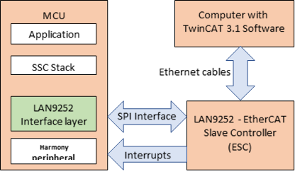

EtherCAT Slave Controller Interface layer is designed for Microchip MCUs to communicate with LAN9252 EtherCAT Slave controller. This EtherCAT framework is configured with the communication interfaces (QSPI ( SPI mode), GPIO). This communication Interface layer which will acts like bridge between EtherCAT Slave Stack Code (SSC) and Host peripherals to communicate with LAN9252. SSC Stack (generated from standard SSC tool) have feature to transfer the File over EtherCAT (FoE) for MCU firmware upgrade from TwinCAT tool.

Interface Header File: ecat_main.h
The interface to the Ethercat Slave Stack library is defined in the ecat_main.h header file.
|
EtherCAT Library Help
|